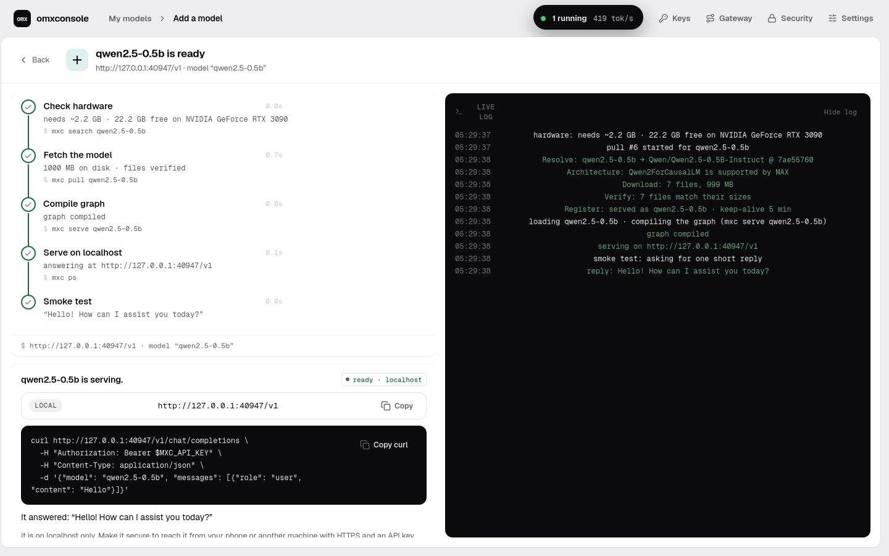
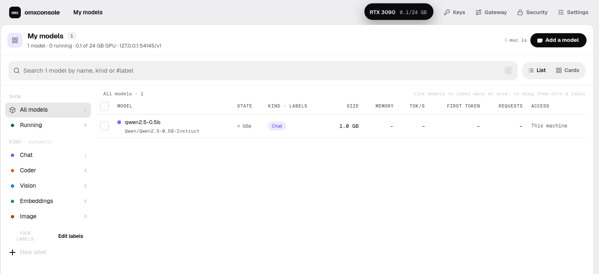
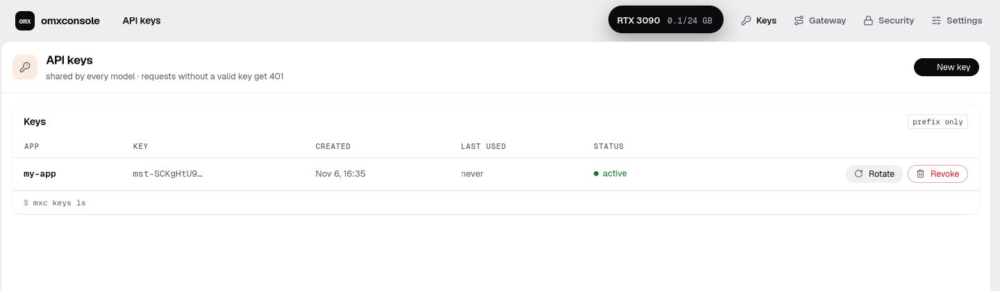
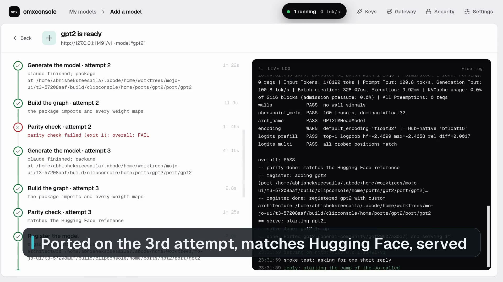
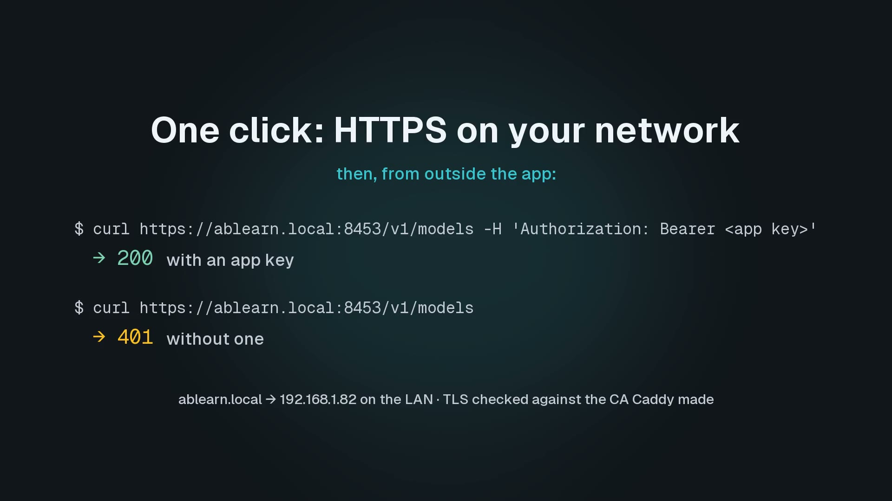

omxconsole
Local AI on your GPU. Made easy.
Find a model on Hugging Face, download it and serve it on your own GPU behind one OpenAI-compatible endpoint. A desktop app for Linux and the Mac, around MAX*, Modular's inference platform, which runs the models.
Needs MAX installed: docs.modular.com/max/packages · omxconsole itself is free, MIT licence
the real app on Linux, one run on one RTX 3090 · the slow stretches are time-lapses and their captions say so
MAX already serves models well. omxconsole is the convenience around it: it finds and downloads them, keeps one endpoint and a key per app, and measures them.
One endpoint. Every model you've pulled.
Your apps call one address and name a model. A model starts on its first request and stops after five idle minutes, so GPU memory goes only to the models in use.
from openai import OpenAI client = OpenAI(base_url="http://127.0.0.1:11435/v1", api_key="mst-…") # a key you made in Keys r = client.chat.completions.create( model="qwen2.5-0.5b", messages=[{"role": "user", "content": "Say hello in five words."}]) print(r.choices[0].message.content)
Find it. Download it.
Search the MAX catalog and Hugging Face by name, as in the picture above: every result is checked against this machine's GPU memory. Before any weights come down, it checks that MAX supports the model's architecture. Downloads resume where they stopped, even when the connection drops, and are checked against the Hub's file sizes; a cancel leaves nothing half-made.
It answers before it says Ready.
After the download, the app starts the model on MAX and asks it a first question. The Ready card, with the endpoint and a curl line to copy, comes only after the reply.

the Ready card from a test run on its own port; the app's own address is 127.0.0.1:11435
Every model, one page.
Your models as one list: search it, group it by kind or by your own labels, see it as rows or cards. Open one and its Overview, Benchmark and Logs are tabs, with Start, Stop and Remove beside them.

Safe to share. One key per app.
Each app that calls the endpoint gets its own key. A key is shown once and stored only as a hash; revoke one and only that app stops.

MAX can't run it? Port it.
Claude Code, signed in with your own login or an API key, writes the architecture under Modular's import-model skill, by analogy with one MAX already supports. It works in a sandbox, and three gates check it: every weight maps, the outputs match Hugging Face, and it generates. Linux only for now (the sandbox is bubblewrap).
When it fails, the screen hands you the workspace, the whole log, the gate that failed and the best attempt it kept, so you can guide it from there.

Your GPU, from any machine.
Turn on HTTPS and other machines on your network reach the same endpoint. Caddy, which you install, fronts it with a certificate it signs itself, and every request carries an app key. Your machines trust that certificate once.

Measure it, the same way every time.
A 512-token prompt, 128 tokens back, a warm-up and then five timed runs, through the same endpoint your apps use: time to first token and tokens per second, with their spread.
checked against a stopwatch around the OpenAI SDK's own streaming call on one RTX 3090: within 1% in the recorded run; the check allows 25%, since the SDK alone varies by about 10% from run to run · docs/goals/55-report.md, M4
All omxcode. MAX runs the models.
omxconsole
Native on each platform: GTK on Linux, AppKit on the Mac. One Mojo codebase, built on omxcode.
consoled
A Mojo service beside the app: Hugging Face downloads, keys, the endpoint, benchmarks. It starts with the app and stops when the app closes.
MAX
Modular's max serve, installed by you. It loads and runs the models; omxconsole wraps it.
read more
Try it on your GPU.
Download for Linux Download for Mac
Linux: x86_64, GTK 4; unpack, then ./omxconsole · Mac: Apple Silicon, not notarised: xattr -dr com.apple.quarantine omxconsole.app · both need MAX: max on your PATH, or MXC_MAX=/path/to/max
git clone https://github.com/abhisheksreesaila/omxcode cd omxcode && pixi install scripts/build.sh console linux && build/console/linux/console